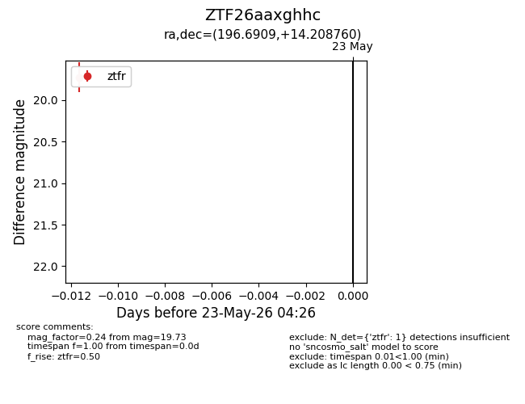
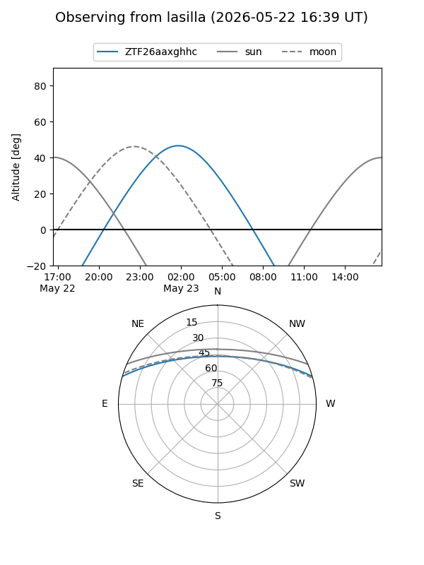
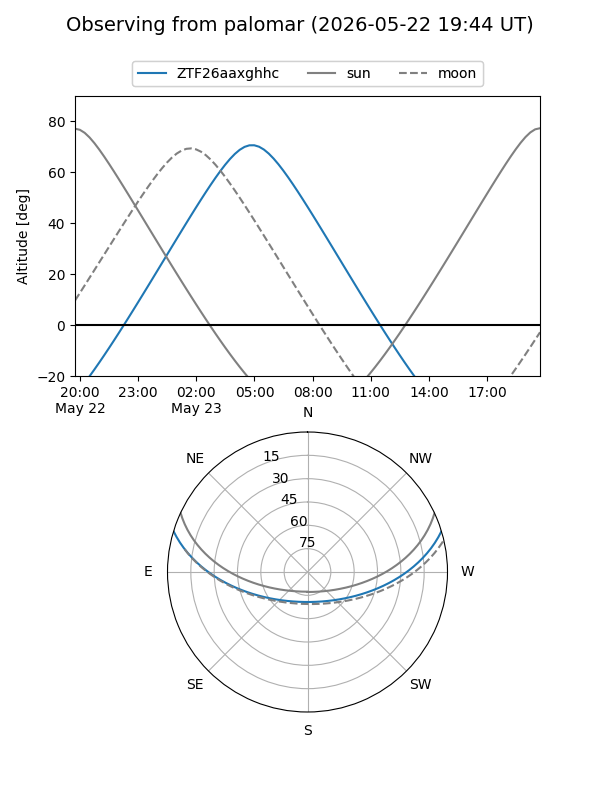

ZTF26aaxghhc
Target ZTF26aaxghhc at 2026-05-23 04:27
Aliases and brokers:
lsst-FINK: link
lsst-Lasair: link
lsst-ALeRCE: link
ztf-FINK: link
ztf-Lasair: link
ztf-ALeRCE: link
alt names
ZTF26aaxghhc (ztf,fink_ztf)
Coordinates:
equatorial (ra, dec) = 196.6909,+14.20876
equatorial (HMS+DMS) = 13:06:45.82,+14:12:31.54
galactic (l, b) = (319.1575,+76.59530)
Flags:
Photometry:
last ztfr=19.73
1 ztfr detections
Lightcurve

Visibility


Additional plots